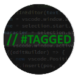
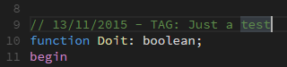
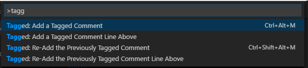

Broader reach, same simple workflow
Tagged Comment is now published to Open VSX and adds translation and Web support, so your tagging workflow keeps working wherever you run VS Code.

Tagged CommentVisual Studio Code Extension
Tagged Comment helps you add personalized comments to your code using a customizable template. Combine fixed text with variables like the current date, then re-add the same tag whenever you need it again.

What's new in 2.10
Tagged Comment is now published to Open VSX and adds translation and Web support, so your tagging workflow keeps working wherever you run VS Code.
Features
Type your tag and let the template turn it into a formatted comment on the current line or above.
02Define your own tagged.tagString combining fixed text and variables.
Reuse the previously entered tag without retyping it, at the current line or above.
Add a tagged comment
Run a command, enter your tag text, and Tagged Comment inserts it using your configured template on the current line, or as a new line above it, keeping indentation intact.
Adds the tagged comment on the current line, right where your cursor is.
Inserts a new line above the current one with the tagged comment, preserving indentation.

Customizable template
The tagged.tagString setting controls exactly how each comment is built.
Mix fixed labels, like an issue tracker prefix, with variables that get replaced automatically
every time you add a tag.
Just adds the current date alongside your tag:
// #day/#month/#year - TAG: #enteredTextSwap the label to match your team's conventions:
// #day/#month/#year - ISSUE: #enteredText{
"tagged.tagString": "// #day/#month/#year - TAG: #enteredText"
}Re-tag commands
ctrl+alt+shift+m (cmd+alt+shift+m on macOS)Tagged: Add a Tagged CommentTagged: Add a Tagged Comment Line Abovectrl+alt+m (cmd+alt+m on macOS)FAQ
It inserts a comment built from your tagged.tagString template, replacing variables like #enteredText, #day, #month, and #year with the tag you typed and the current date.
Yes! Use Tagged: Add a Tagged Comment Line Above to insert a new line above your cursor with the tagged comment, keeping the same indentation.
Run Tagged: Re-Add the Previously Tagged Comment (or its "Line Above" variant) to insert the same tag again without retyping it.
Change the tagged.tagString setting to any combination of fixed text and the supported variables, for example to match your team's issue tracker conventions.
ctrl+alt+m (cmd+alt+m on macOS) adds a tagged comment, and ctrl+alt+shift+m (cmd+alt+shift+m on macOS) re-adds the previous tag, both while the editor has focus.
Yes! It works on all VS Code forks, ensuring compatibility and seamless integration with your favorite tools.
If you have a feature request, bug report, or suggestion, please submit it through our GitHub Issues page. We appreciate your feedback!
If you have a question that's not covered in the FAQ, feel free to reach out through our support channels at GitHub Discussions. We're here to help!
Donate
Tagged Comment is open source, and your support helps keep maintenance, improvements, and ecosystem compatibility moving forward.